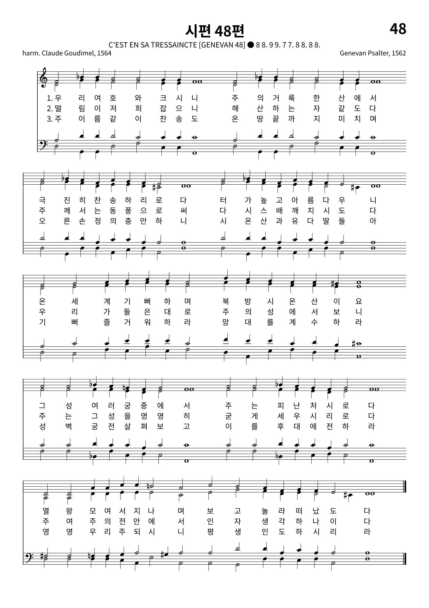

Psalm 48
C’EST EN SA TRESSAINCTE [GENEVAN 48] · 8 8. 9 9. 7 7. 8 8. 8 8.
English title: Great Is the LORD! Him Greatly Laud
Tune: Genevan Psalter, 1562 · Harmony: Claude Goudimel, 1564 · Lyrics: Korean adaptation of Psalm 48 from the Korean Revised Version (AI draft adaptation · not yet theologically reviewed) · 3 stanzas
Score PDF MusicXML (for printing) MusicXML (for accompaniment, with prelude and repeats) Read Psalm 48 (Korean Revised Version)
Score
← Psalm 47 ListAccompaniment (in preparation)Psalm 49 →
Lyrics (Korean)
Stanza 1 (Ps. 1~5절)
우리 여호와 크시니
주의 거룩한 산에서
극진히 찬송하리로다
터가 높고 아름다우니
온 세계 기뻐하며
북방 시온 산이요
그 성 여러 궁중에서
주는 피난처시로다
열왕 모여서 지나며
보고 놀라 떠났도다
우리 여호와 크시니
주의 거룩한 산에서
극진히 찬송하리로다
터가 높고 아름다우니
온 세계 기뻐하며
북방 시온 산이요
그 성 여러 궁중에서
주는 피난처시로다
열왕 모여서 지나며
보고 놀라 떠났도다
Stanza 2 (Ps. 6~9절)
떨림이 저희 잡으니
해산하는 자 같도다
주께서는 동풍으로써
다시스 배 깨치시도다
우리가 들은 대로
주의 성에서 보니
주는 그 성을 영영히
굳게 세우시리로다
주여 주의 전 안에서
인자 생각하나이다
떨림이 저희 잡으니
해산하는 자 같도다
주께서는 동풍으로써
다시스 배 깨치시도다
우리가 들은 대로
주의 성에서 보니
주는 그 성을 영영히
굳게 세우시리로다
주여 주의 전 안에서
인자 생각하나이다
Stanza 3 (Ps. 10~14절)
주 이름 같이 찬송도
온 땅 끝까지 미치며
오른손 정의 충만하니
시온 산과 유다 딸들아
기뻐 즐거워하라
망대를 계수하라
성벽 궁전 살펴보고
이를 후대에 전하라
영영 우리 주 되시니
평생 인도하시리라
주 이름 같이 찬송도
온 땅 끝까지 미치며
오른손 정의 충만하니
시온 산과 유다 딸들아
기뻐 즐거워하라
망대를 계수하라
성벽 궁전 살펴보고
이를 후대에 전하라
영영 우리 주 되시니
평생 인도하시리라